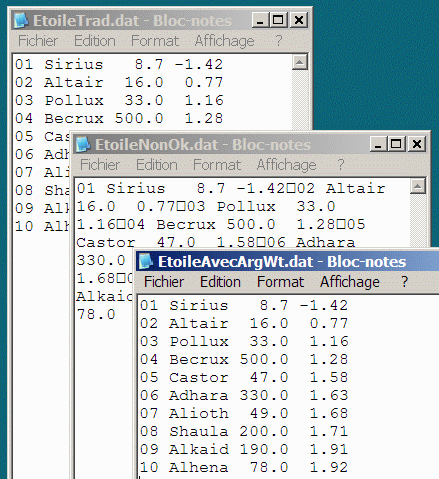

La fonction fprintf permet également d'écrire directement dans un fichier. Il suffit de spécifier le nom du fichier et de modifier légèrement le format d'écriture.
Il faut modifier légèrement le format d'écriture, car, le symbole généré par \n (nouvelle ligne) n'entraîne
pas automatiquement le passage au début de la ligne suivante dans un fichier.
Il faut effectuer un retour à la ligne en ajoutant le caractère \r (retour
au début de la ligne) avant le caractère \n. Le code \r\n signifie
donc retour au début de la ligne et nouvelle ligne.
Ouvrir le fichier en mode wt, qui se traduit par write text. Matlab génère alors automatiquement les caractères de fin de ligne afin de rendre le fichier compatible avec d'autres applications qui utilisent des fichiers de texte bien formulés.
Exemple :
% Fichier Etoile2.m clear; clc; Etoile0 % données disp('Écriture traditionnelle dans un fichier') disp('Voir ÉtoileTrad.dat') n=length(Distance); fid=fopen('EtoileTrad.dat','w'); % w (write): pour l'écriture. for i=1:n fprintf(fid,'%2.2d %s %5.1f %5.2f\r\n',... i,Etoile(i,:),Distance(i),Magnitude(i)); end fclose(fid); disp('------------------------------') disp(' Écriture à l''écran') disp('------------------------------') for i=1:n fprintf('%2.2d %s %5.1f %5.2f\n',... i,Etoile(i,:),Distance(i),Magnitude(i)); end disp('------------------------------') disp('Écriture avec un même format dans EtoileNonOk.dat') fid=fopen('EtoileNonOk.dat','w'); % w (write): pour l'écriture. for i=1:n fprintf(fid,'%2.2d %s %5.1f %5.2f\n',... i,Etoile(i,:),Distance(i),Magnitude(i)); end fclose(fid); disp('Écriture avec argument wt : EtoileAvecArgWt.dat') fid=fopen('EtoileAvecArgWt.dat','wt'); % w (write): pour l'écriture. for i=1:n fprintf(fid,'%2.2d %s %5.1f %5.2f\n',... i,Etoile(i,:),Distance(i),Magnitude(i)); end fclose(fid);
Écriture traditionnelle dans un fichier
Voir ÉtoileTrad.dat
------------------------------
Écriture à l'écran
------------------------------
01 Sirius 8.7 -1.42
02 Altair 16.0 0.77
03 Pollux 33.0 1.16
04 Becrux 500.0 1.28
05 Castor 47.0 1.58
06 Adhara 330.0 1.63
07 Alioth 49.0 1.68
08 Shaula 200.0 1.71
09 Alkaid 190.0 1.91
10 Alhena 78.0 1.92
------------------------------
Écriture avec un même format dans EtoileNonOk.dat
Écriture avec argument wt : EtoileAvecArgWt.dat
Résultat :

fid = fopen(Nom_du_fichier,'permission')
Cette instruction ouvre un fichier pour la lecture ou l'écriture. Matlab retourne alors un nombre entier utilisable par une fonction de lecture ou d'écriture comme fprintf.
fclose(fid)
Cette fonction ferme le fichier identifié par la variable fid.
>> doc fprintf